大家还记得，被这张图支配的恐惧么？
“氢氦锂铍硼，碳氮氧氟氖... ”，相信对于很多人来说都是难忘的回忆吧。
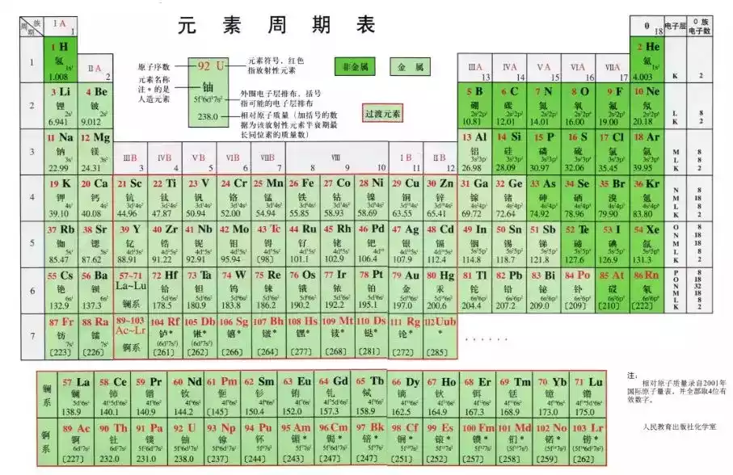
1869年3月6日，化学家门捷列夫向俄罗斯化学学会展示了一种新的元素分类方法，第一张现代意义上的元素周期表面世。
老实说，可能这张150岁的元素周期表，对于很多人来说，只是高中化学里的“必背”。
但是对于人类文明来说，它的意义是非凡的。
在门捷列夫的那个时代，人类已经发现了63种元素，但是都是偶然的情况下发现的，杂乱无章。化学元素对人类而言只是大自然中零散破碎、偶然现身的事实。元素周期律的发现让人类触及了元素间的规律。使得人类对自然的认识，迈上了新的台阶。
不知不觉中，这张有着重大意义的周期表已经150岁了！更有趣的是，在这150年里，人类也成功发挥想象力，在这张“枯燥”的周期表上搞起了创作。
咱们先看看相对正经的元素周期表。
这张图是最原始的元素周期表。当时门捷列夫还在图中标记了几个“？”号，这些“？”号是他为当时还未知的元素预留下的房间。
（1869 年元素周期表） 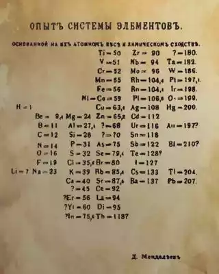
而下面这个呢，来自比尔盖茨的办公室。
这是一个巨大的壁挂式周期表。感觉说它是最霸气的元素周期表也不为过吧！
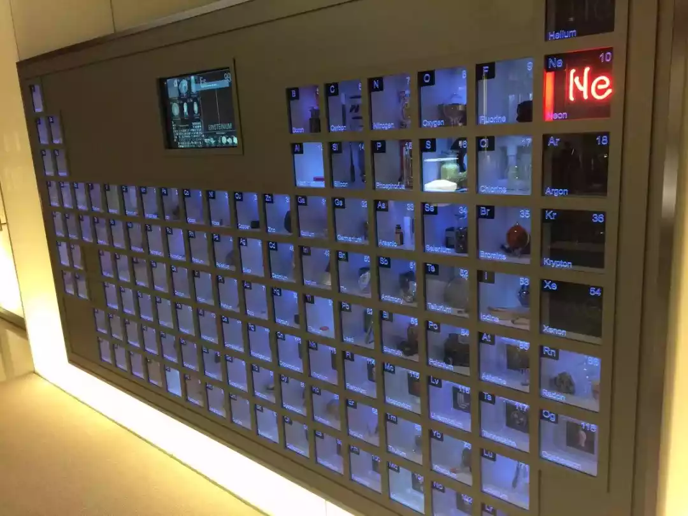
明尼苏达大学化学学院里也有一个，跟人等高。
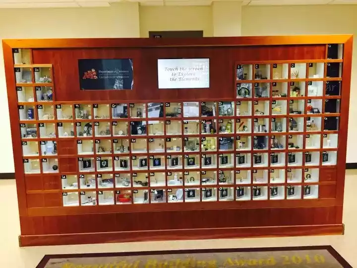
放大一点，可以看到每一个小柜子里都有对应元素的单质实物或代表物体。
惰性气体~
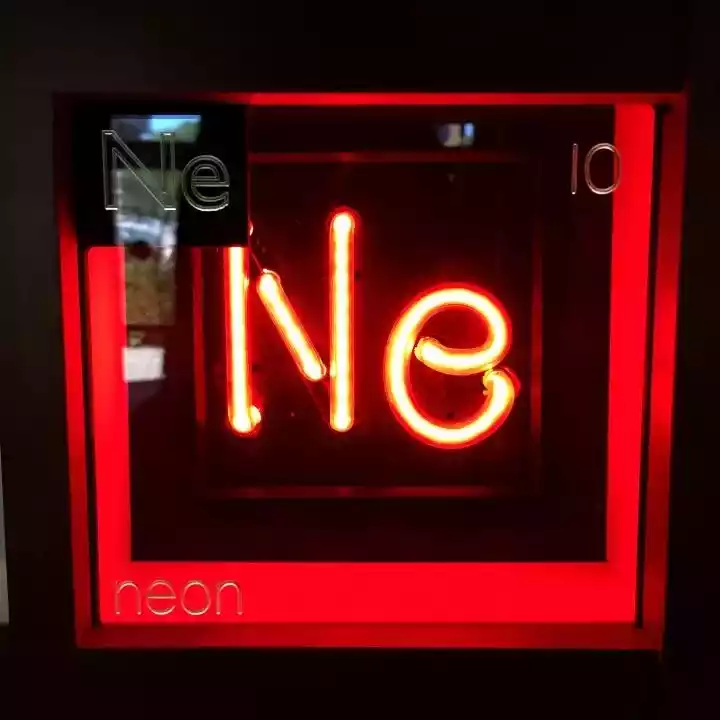
锕 Ac，密封展示，标注了放射性~
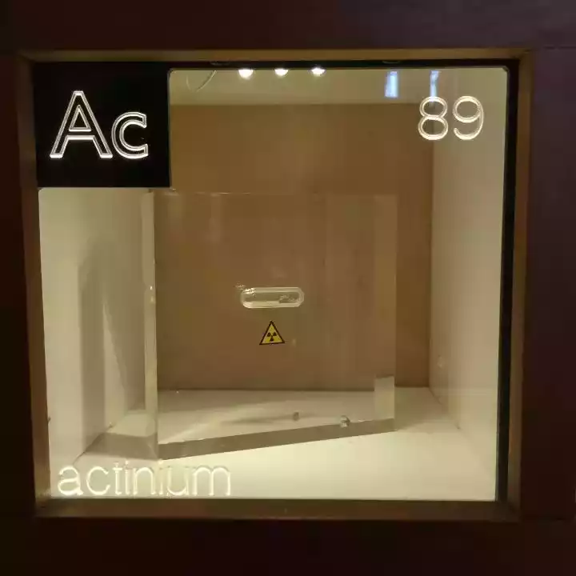
呃，格子挺多，就不一一展示了。
下面这张元素周期表呢，每个方格里都变成了元素对应的发现国家的国旗。
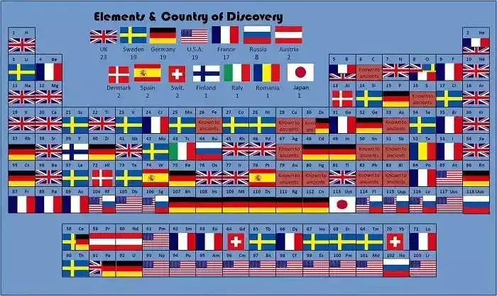
世超数了下，发现元素数量排名前三的国家是：英国、瑞典、德国。
早期工业化强国排在前面，大家应该都能理解。那瑞典为什么排在前面呢？
因为人家有地理优势啊，瑞典具备大量矿石和可用于燃料的森林，非常适合冶金业，而冶金工业需求刺激了化学研究的发展。
接下来，一些有趣的元素周期表出现了！
充满中国特色的，太极八卦化学元素周期表。。。
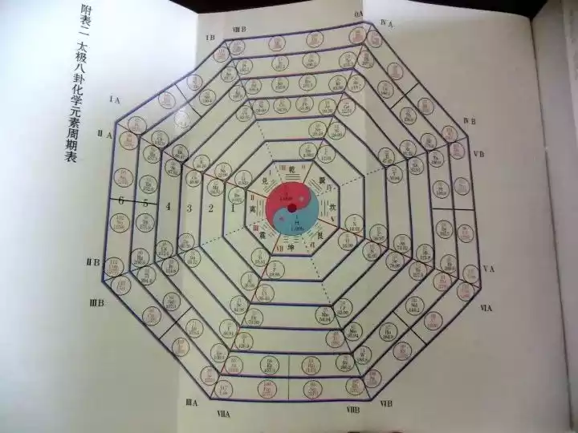
口袋妖怪版元素周期表。
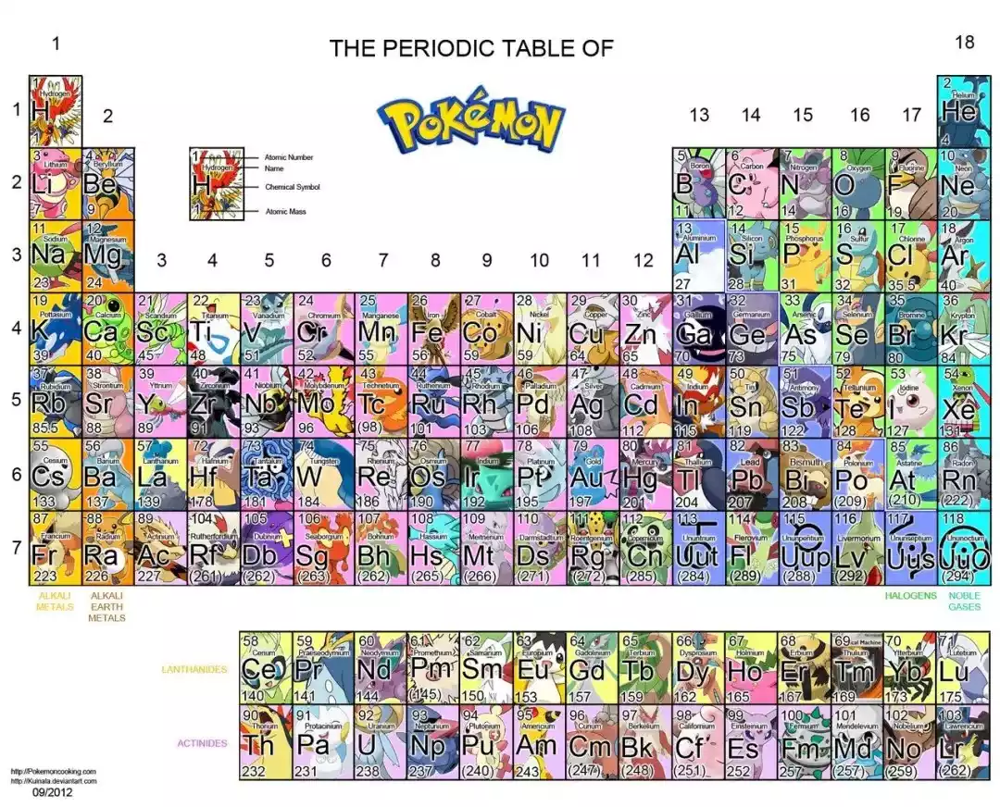
呃，这张图让世超想起了前几年的很火的一个讨论： “初代口袋妖怪”跟“元素周期表”。不知道作者是不是从这个讨论中受到的启发。。。
下面这张图里的人物不知道各位差友能认出多少？
不吹不黑，世超基本都认识。
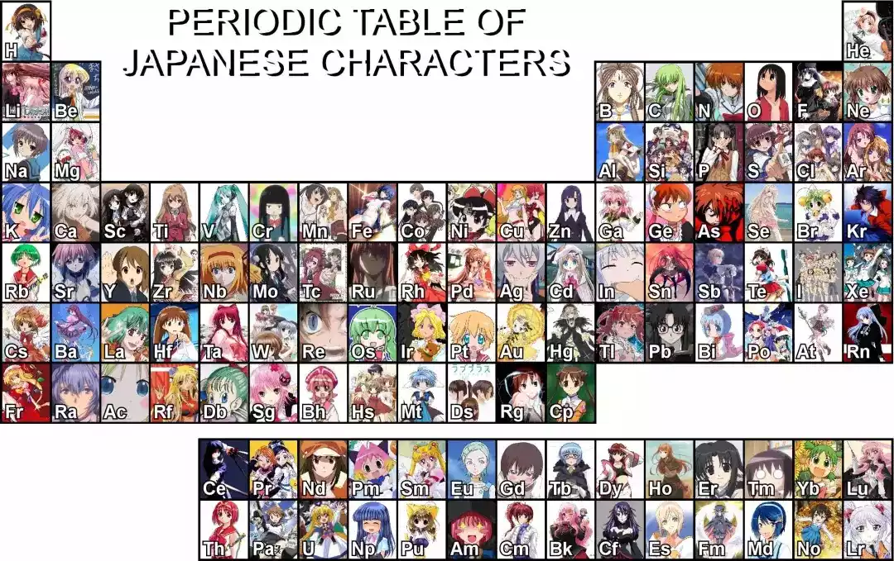
漫威也不甘示弱，有漫画家把漫威英雄画成了元素。
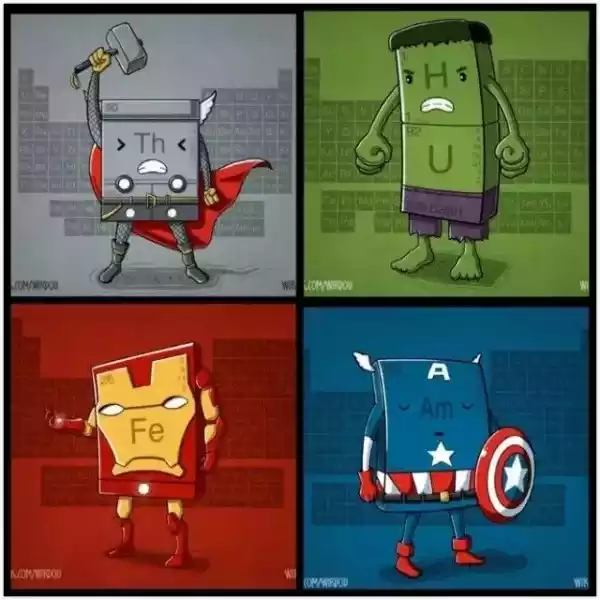
除了这些有趣的图表以外，元素周期表甚至有自己的歌。。。
跟自己的桌游。
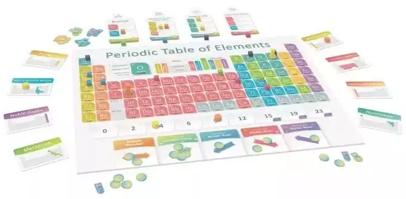
这是一款围绕元素周期表设计的游戏，它的游戏机制就是化学中的一些基本原理，你需要激活周期并进行移动，发现新的元素从而得分。
在这 150 年里，元素周期表有了越来越多有趣的表现方式，周期表上的成员也不断的增多。最开始门捷列夫总结的元素周期表上有 63 种元素，到 2017 年，我们已经有 118 种元素了。
看起来一切都很美好。人类文明在滚滚向前~
但，其实元素周期表上的某些已知元素，可能在 100 年内就要从地球上消失了。。。
比如制造手机和计算机触屏的铟。
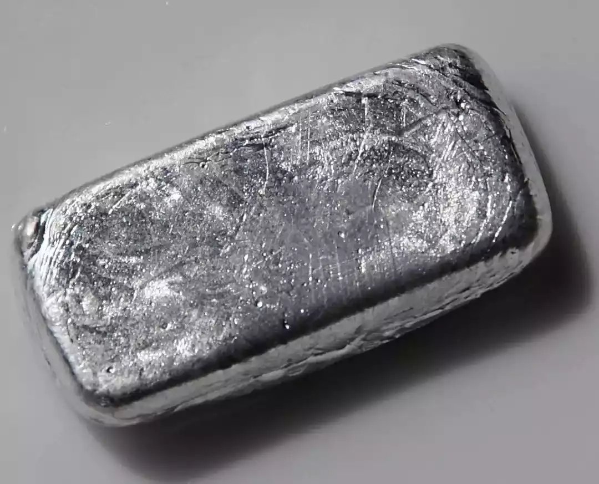
随着上世纪 90 年代开始，平板显示器领域消费量剧增，大量的铟被使用。
按照目前人类使用习惯，每隔几年就换掉旧电脑和旧手机，这一资源可能很快就要面临枯竭。
“突然发现连元素周期表都有铝硼铕” —— End ——


发表您的看法